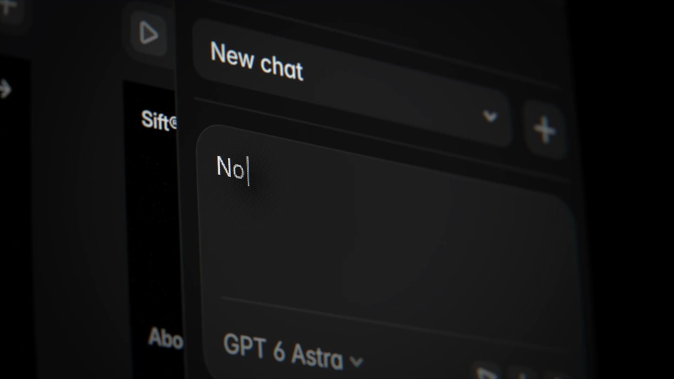
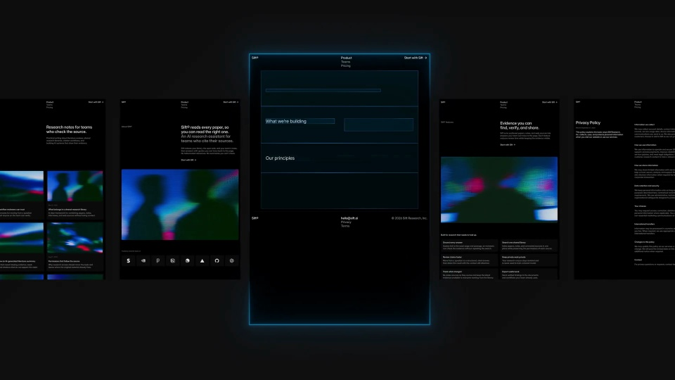
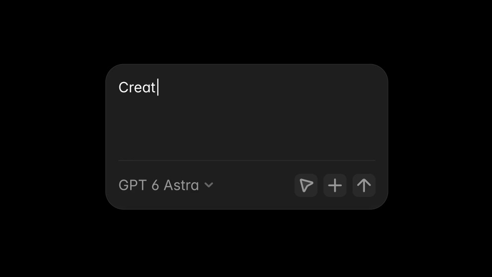
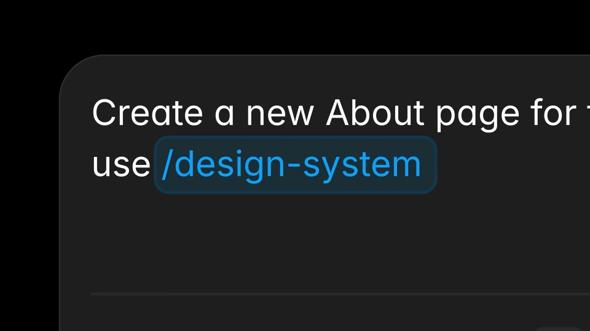
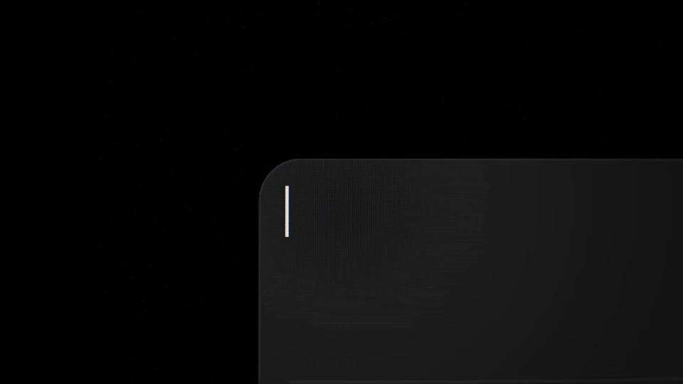

Framer / V272
Framer Skills
开场在输入框中接连输入字体和引号规则；接着展示已完成页面，使观众知道这些规则影响的是整套页面。
构图与编排 可播放 · 可替换内容
整体编排规则示例
查看 HTML 源码
<!doctype html><html lang="zh-CN"><meta charset="utf-8"><meta name="viewport" content="width=device-width,initial-scale=1"><title>Framer Skills — teach the agent how you work · sequence</title><style>html,body{margin:0;width:100%;height:100%;overflow:hidden;background:#080808}canvas{display:block;width:100%;height:100%;object-fit:contain}</style><body data-mode="sequence"><canvas width="1000" height="600"></canvas><script src="data.js"></script><script src="common.js"></script><script src="scene.js"></script><script src="bridge.js"></script></body></html>画面元素输入框多页横向画廊蓝色选中画布命令标签
MOTION LANGUAGE
动作与构图
局部动作 · 构图规则
01
先展示重复工作，再给快捷入口
开场在输入框中接连输入字体和引号规则；接着展示已完成页面，使观众知道这些规则影响的是整套页面。
02
让蓝色边框串起旧页与新页
让蓝色边框串起旧页与新页规则示例
查看 HTML 源码
<!doctype html><html lang="zh-CN"><meta charset="utf-8"><meta name="viewport" content="width=device-width,initial-scale=1"><title>Framer Skills — teach the agent how you work · sequence</title><style>html,body{margin:0;width:100%;height:100%;overflow:hidden;background:#080808}canvas{display:block;width:100%;height:100%;object-fit:contain}</style><body data-mode="clip" data-start="17" data-end="22"><canvas width="1000" height="600"></canvas><script src="data.js"></script><script src="common.js"></script><script src="scene.js"></script><script src="bridge.js"></script></body></html>横向排列多个暗色网页，中央页面较大且带细蓝边。镜头沿内容上下移动；调用 /design-system 后，新页面沿用同一边框和文字层级。
03
将命令收成可记住的符号
结尾放大 /skills 标签，以蓝色圆角描边和短促发光取代复杂界面。正文用中等字重，页面小字保持克制。
04
迁移时换规则内容，不换因果顺序
更换被复用的品牌规范、命令名与网页内容。保留“重复约束—调用技能—一致结果”的前后对比。
SEQUENCE
段落与节奏
点击段落，定位到上方编排示意。





画面参考 · 离散静帧
KEEP THE RELATIONSHIPS
制作其他主题
- 换成其他技能和产物，维持输入约束与输出外观的对应。
制作约束
输入框 / 多页横向画廊 / 蓝色选中画布 / 命令标签
- 开场在输入框中接连输入字体和引号规则；接着展示已完成页面，使观众知道这些规则影响的是整套页面。
- 横向排列多个暗色网页，中央页面较大且带细蓝边。镜头沿内容上下移动；调用 /design-system 后，新页面沿用同一边框和文字层级。
- 结尾放大 /skills 标签，以蓝色圆角描边和短促发光取代复杂界面。正文用中等字重，页面小字保持克制。